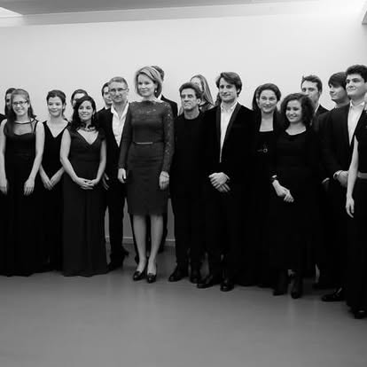
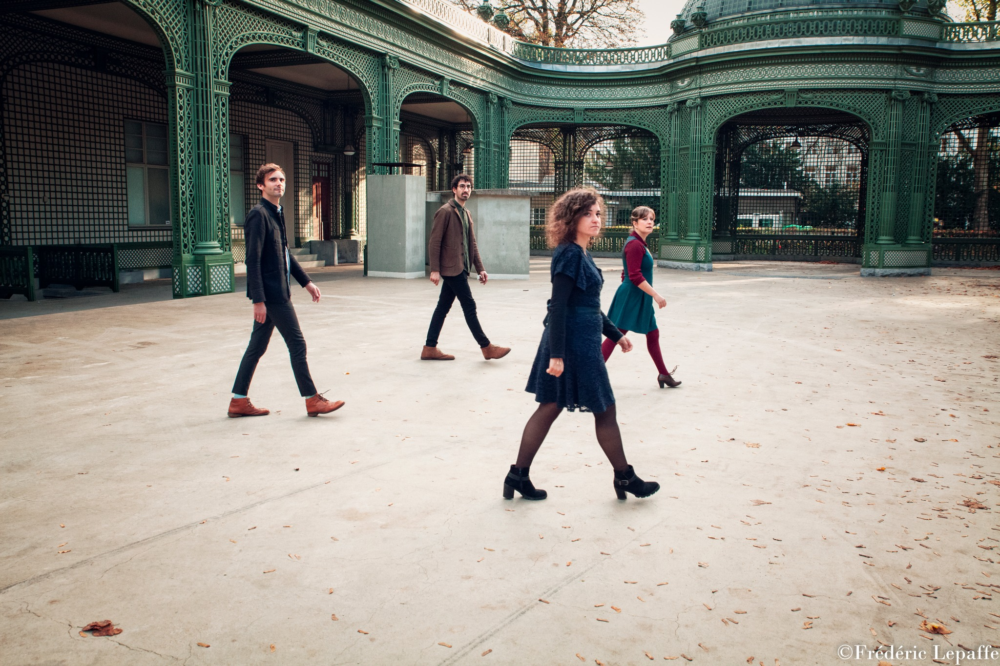

A l’âge de trois ans et demi, Marie commence la musique.
Son attirance pour les fréquences graves la pousse à choisir l’alto comme instrument définitif.

Formation
Voulant faire de sa passion son métier, Marie entre au Conservatoire Royal de Bruxelles où elle obtient sa licence avec distinction dans la classe de Thérèse-Marie Gilissen. Elle poursuit ses études au Koninklijk Conservatorium van Brussel dans la classe de Paul de Clerck où elle obtient son master avec distinction puis se perfectionne dans la classe de Vincent Hepp au Conservatoire Royal de Bruxelles où elle obtient un second master. Marie participe à des master classes notamment avec le quatuor Prazack, ainsi que les altistes Thomas Ribble et Tabea Zimmerman. Marie a fait partie du quatuor Akhtamar puis du quatuor Arca, ainsi que de l'ensemble PasSages de 2013 à 2017 et a intégré les Young Belgian Strings de 2014 à 2017.

Ouverture
Elle élargit ses horizons en suivant le cours d'improvisation libre de Kris Defoort grâce auquel elle rencontre un noyau de musiciens avec lesquels elle crée et joue régulièrement. En faisant partie d'un ensemble de musique folk, elle fera de nombreuses master classes à travers l'Europe afin de découvrir la musique des balkans, klezmer et orientale. De la diversité de ses intérêts naquit le Duo Dilemme dont le but est de transmettre à tout public les bienfaits de la musique classique ainsi que de la musique populaire.

Parcours
Depuis 2016, Marie a joué dans différents orchestres et ensembles classiques tels que :
Orchestre National de Belgique, Brussels Chamber Orchestra, Orchestre du Festival Musiq’3, La
Chapelle Sauvage, Nuove Musiche, La Chapelle Musicale de Tournai, Orchestre de Chambre de
Bruges, Ataneres, l’orchestre de la Fondation Grumiaux, sextuor Vivaldi (Camille Babut du Marès,
Maarten Vandenbemden).
Marie est alto solo/cheffe de pupitre de l’orchestre SymphoniaAssai et de l’orchestre du
XXIe siècle.
Marie joue également dans des ensembles originaux alliant musique classique et autres genres,
notamment aux côtés de Pauline Leblond dans le Pauline Leblond Double Quartet, Lorenzo Di Maio
Trio avec le quatuor UFO (quatuor créé par Fabian Fiorini), Free Desmyster dans le projet «
Takenouchi Document’s », Olivier Thomas dans le projet « Sans voix en l’air », Angelo Grégorio
avec les projets « DAS700 » et « Orchestra Limadou », Fil Caporali dans le trio « Moon Souvenirs
», Driss El Maloumi avec le Watar Quintet associé au Driss El Maloumi Trio, Veda Bartringer dans
« Veda & The String Machine », Pavel Tchikov et son projet électro « SOPA BOBA ».
Marie s’est produite dans les comédies musicales « La mélodie du bonheur » et « Le Magicien d’Oz
» au sein de la compagnie Ars Lyrica. Marie a rejoint l’orchestre The Atomic Orchestra en 2025,
avec lequel elle a participé au festival Pukkelpop ainsi qu’à l’émission télévisée de la VRT «
Live Live Live! ». Marie joue également avec le célèbre groupe de doom metal AMENRA dans leur
formule acoustique.
Création

Depuis 2022, Marie est à l’initiative d’un projet à la croisée des univers classique et jazz : Bluesy Mary. Marie est à l’origine d’un projet jeune public, « Le grenier de Madame Léon », avec Camille Babut de Marès au violon.